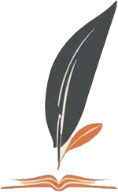

<!DOCTYPE>
<html lang="es">
<head>
  <meta charset="UTF-8">
  <link rel="stylesheet" href="style1.css">
  <link rel="stylesheet" href="https://cdnjs.cloudflare.com/ajax/libs/font-awesome/6.5.0/css/all.min.css">
</html>
</head>

<body>

  <div class="top-bar"></div>

  <div class="container">

    <header>

      <a  href="index.html" class="logo-container">

        
        <div class="texto-logo">Luciaparedes.com</div>

      </a>  

      <nav>
        <a href="index.html">Inicio</a>
        <a href="autora.html">Sobre mí</a>
        <a href="blog.html">Blog</a>
        <a href="libros.html">Libros</a>
        <a href="contacto.html">Contacto</a>
      </nav>

      <div class="social-icons">
        <a href="#"><i class="fab fa-facebook-f"></i></a>
        <a href="#"><i class="fab fa-instagram"></i></a>
        <a href="#"><i class="fab fa-twitter"></i></a>
      </div>
     
    </header>

    <section class="hero"></section>

    <section class="home">

      <div class="frase">
        <h1>Las historias que no se cuentan, terminan olvidándose.</h1>
      </div>

      <div class="intro">
        
        <p>
          Soy Lucía Paredes, escritora apasionada por las palabras y por los
          mundos que nacen de ellas.
        </p>

        <p>
          
          En este espacio comparto mis libros, mis reflexiones y todo aquello
          que forma parte de mi universo literatio.
        </p>
      </div>

      <div class="intro-libros">
        <p>
          Cada obra es un viaje. Un recorrido por emociones, recuerdos y
          pregunatas que nos acompañan a lo largo de la vida.
        </p>
      </div>

      <div class="cita">
        <p>
          No escribo para contar historia,<br>
          escribo para que alguien se sienta menos solo.
        </p>
      </div>

      <div class="cta">
        <a href="#">Descubre mis libros</a>
        
      </div>

    </section>
     <footer class="footer-simple">

      <div class="footer-top">

        <p>Lucía Paredes . Escritora</p>

      </div>

      <div class="footer-links">
        <a href="#">Inicio</a>
        <a href="#">La autora</a>
        <a href="#">Libros</a>
        <a href="#">Contactos</a>
        <a href="#">Aviso legal</a>
      </div>

      <div class="footer-pagos">

        <span>Métodos de pago:</span>
        
        
        
        

      </div>

      <p class="footer-frase">
        Escribir es recordar lo que nunca ocurrío.
      </p>

      <div class="footer-copy">
        <p>&copy; 2026 Lucía Paredes. Todos los derechosa reservados.</p>
      </div>
     </footer>
  </body>
</html>